家装 · 12 题
实体、使用区、功能留白与验收动线同时成立。接受不同合法布局。
让物品各得其所， 让一个空间成立。
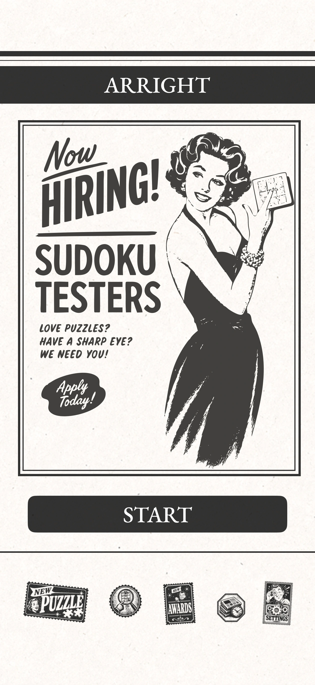
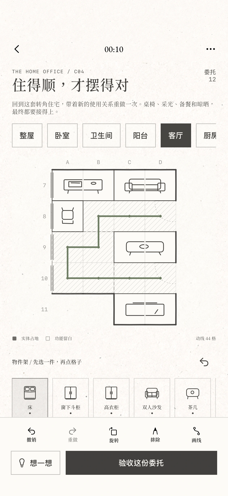
0.2.0 · iPhone Air 模拟器 · 示范布局
起点是极简数独；后来的另一条分支，逐渐长出美式海报、旧报纸广告、版画与手绘痕迹。
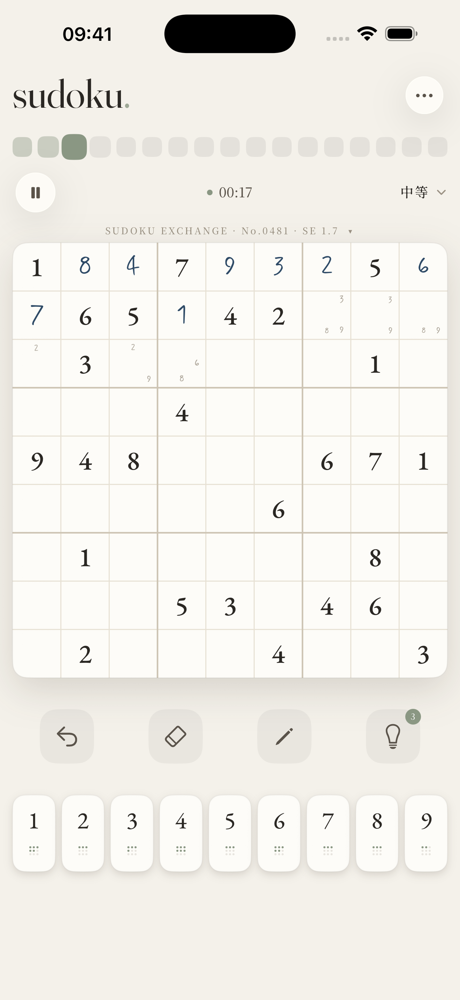
“我的风格非常重要，我的风格是美式的海报风格。”
衬线标题与广告版画，也进入卷纸翻页、邮票入口、设置抽屉和档案翻牌。
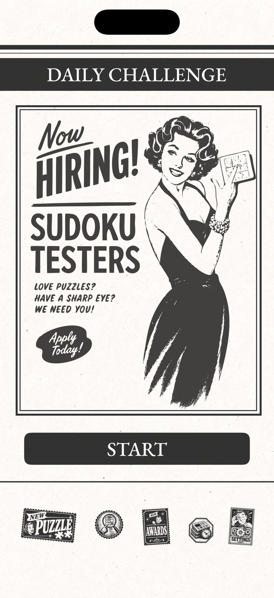
最早的园艺方案仍依附数独：1–8 是八种工具，9 是花果，完成行、列、宫推动生长。后来，盘面开始留空，植物、水井与树荫成为推理对象。
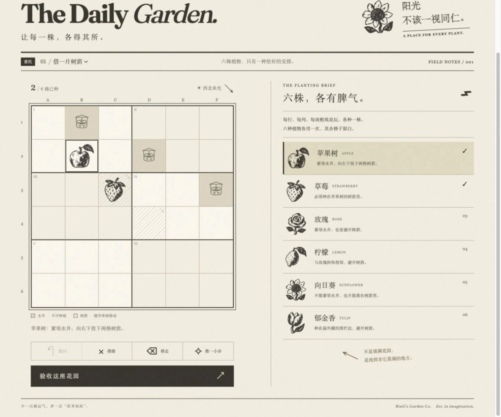
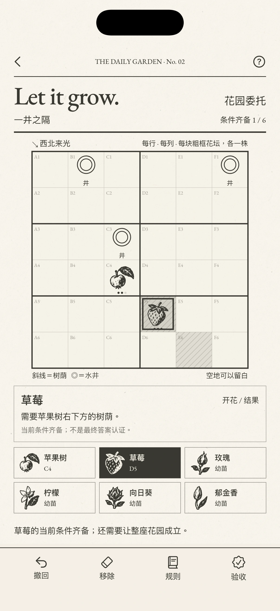
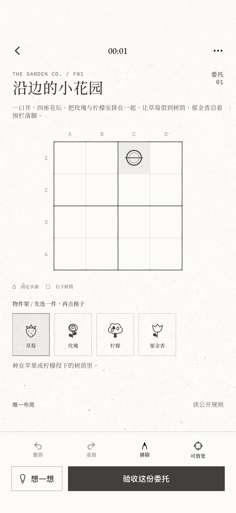
试玩推翻了直接按井数分档的想法。可解性、唯一性先交给求解器；耗时、操作与主观评分留给隐藏难度的试玩。场地大小、宫形与植物特性继续作为变量探索，尚未完成玩家难度标定。
成长曾进入旧阶段实现；当前版本不代表完整保留三阶段成长。
2026.10.11，从“排列、排对”确定 Arright。两天后，对花园与 Murdoku 相似的担忧推动了家装方向：家具的占地、朝向、使用区、门窗和相互关系，都成为条件。
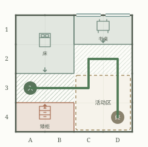
每个空格都要属于真实功能空间。试玩暴露了只追求长路线的问题：画过一条线，不能让任意空地自动合法。
客厅原型曾为了收窄答案，把椅子朝向窗户。作者在试玩中纠正：家具的使用关系，应该先于为题目添加的限制。
“我希望规则符合真实生活，不要为了凑题目硬加限制。”
0.1.0 另建了通用原生界面，规则能跑，风格却没有跟过来。10 月 28 日，0.2.0 直接迁回原美式海报数独的主要界面与操作。
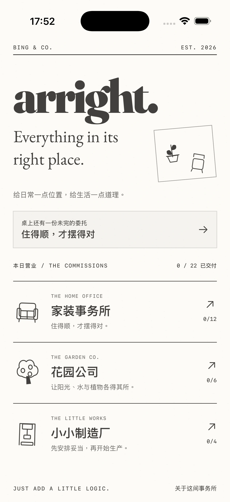
同日原生版本对照 · 2026.10.28 模拟器
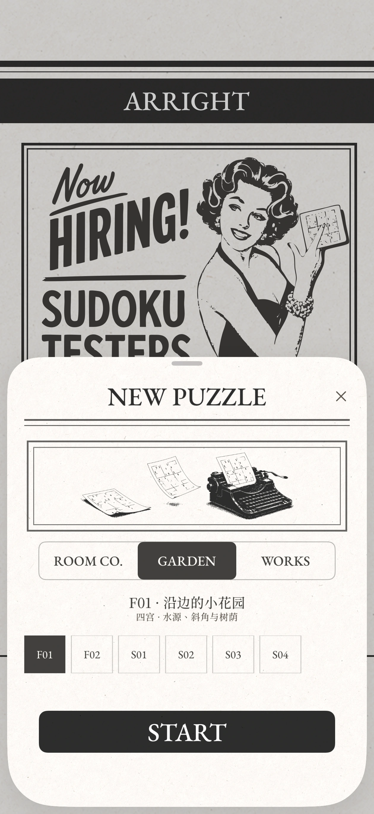
五枚邮票、抽屉、翻牌与 Metal 卷纸已经迁入；原插画仍有 Sudoku 与旧报价文字，品牌图文尚未重制完整。卷纸展示为实际捕获帧。
实体、使用区、功能留白与验收动线同时成立。接受不同合法布局。
植物、水与树荫的关系布局。六题均有完整枚举唯一解记录。
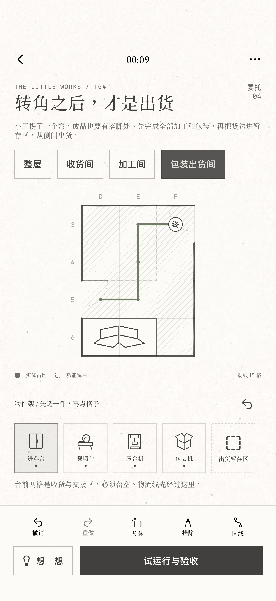
机器、检修交接区与固定工序物流。新增试玩方案，仍待作者判断。
10 月 28 日的记录：32 项原生规则／存档测试，以及 iPhone Air、17e 模拟器关键流程通过。尚无本轮实体 iPhone 验证、TestFlight 上传或 App Store 发布。
该网页原型承载家装第一章；与上方 0.2.0 原生版属于不同阶段。